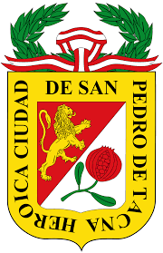
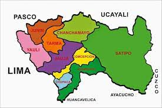

Departamento de Tacna

mapa del Departamento

GOBERNADOR REGIONAL
FERNANDO ORIHUELA ROJAS
PROVINCIAS Y DISTRITOS
PROVINCIAS:
Satipo
Chanchamayo
Vitoc
San Roman
La Merced
modelos de viñetas: disc, square, cicle
DISTRITOS
Tarma
Urubamba